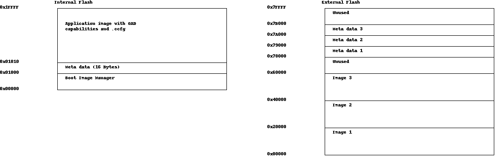

Off-Chip OAD¶
This section describes the TI Off-chip OAD implementation. Off-chip OAD utilizes an external memory component (Flash) to store the new image during download and image selection/update.
Constraints and Requirements for Off-chip OAD¶
In order to perform an Off-chip OAD the target system must provide:
- An external flash storage of at least 124kB and space for storing external flash image header blocks,
- 4 KiB free space in the internal CC2640R2 flash for the BIM,
- Free GPIO pins to interface to the external memory (i.e. 4 wires for SPI).
In addition, it is not possible to use the TI-RTOS kernel in ROM because the second flash page is needed for the image meta data.
Off-chip OAD Memory layout¶
Off-chip OAD applications use both, the internal flash memory and an external flash memory device. The memory maps for both are detailed below.
The internal flash memory contains the BIM followed by the 16 Bytes long meta data header of the current firmware image and finally, the firmware image. The firmware image contains also the CCFG area. It must always provide OAD capabilities so that further updates are possible. The BIM is not intended to be upgraded via OAD.
The external flash memory on the CC2640R2F LaunchPad contains up to 3 OAD Images and up to 3
metadata vectors corresponding to the OAD Images. The memory map layout of the
external flash part is defined in ext_flash_layout.h within the
example application. The size of each OAD Image placeholder is 128 KiB.
The size of a meta data section is equal to the page size (4 KiB) of the flash.
This is necessary to modify the headers indepdent of each other.
BIM for Off-chip OAD¶
The OAD solution requires that permanently resident boot code, the BIM, exists in order to provide a fail-safe mechanism for determining whether to run the existing application image or to copy a new image or images from off-chip flash to on-chip flash. It is assumed that a valid image exists either in off- chip flash ready to be copied or already placed in on-chip flash at any given time. Given this assumption, the initial image placed in internal flash which does not exist in external flash will have invalid external image metadata, and so the bootloader will choose to jump to the existing image’s entry point.
Figure 77. Functional Overview of Off-chip BIM
At startup, the BIM checks if the application image metadata in off-chip flash has a status indicating that the image is to be copied to the on-chip flash. If the status is 0xFF, copies the image if a valid CRC and CRC Shadow are found. If the status is anything other than 0xFF, assumes the application in the on-chip flash is valid to run. If a 2 byte value is found that is neither 0x0000 nor 0xFFFF, but a 0xFFFF shadow checksum is found, the BIM computes the CRC over the image. Image length is determined by the metadata that is also stored contiguous with the CRC in on-chip flash that was copied over during the original write of the image from the off-chip flash.
If off-chip flash contains an image to be downloaded, but this image is undesirable, BIM can be programmed with symbol NO_COPY to skip image checking and jump directly into the image already placed in on-chip flash; at which point the on-chip flash image could invalidate the bad image’s metadata or OAD a new image in its place. BIM will not be able to load any new images while NO_COPY is defined in the build.
BIM is only responsible for making an application image failsafe upon entry. BIM has exactly one entrance to the application image.